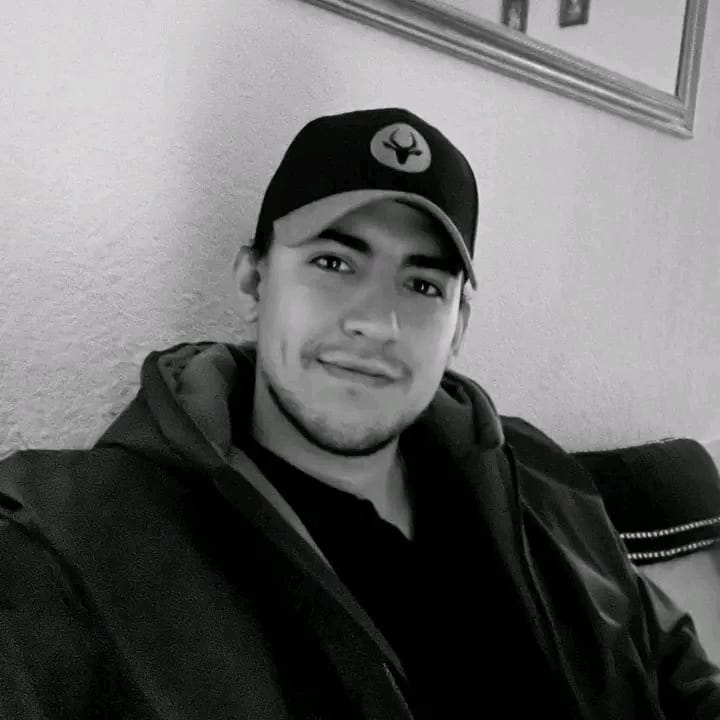

Riaan's Online Resume
An Aspiring Web Developer
Summary
I am new to web development but my aim is to grow my skills and compitance to a trustworthy and
respectable level.
As of January 2026 my skills are limited to HTML but I plan to master the Full-Stack Developer course
that I am currently busy with by the end of June 2026.
My hope is that when you decide to take a chance on me I'll be able to perform up to or even surpass your expectations.
I am hard working and capable of working under pressure.
I am friendly, introverted (sometimes weird) and I value honesty, openess and trust.
Education & Certificates
Work Experience
- My first job was as a fitness intsructor for 2 years at Virgin Active.
My duties were:
- Helping people correct their exercise form
- Keeping the gym floor neat and tidy
- Acting as a First-Aid Responder whenever someone got injured
This was from 2018 - 2020.
- I was a Sales Rep for a Company called Kindred Solutions.
My duties were as follows:
- Getting sales on any of our industrial products
- Delivering the orders I received
- Reacted to breakdowns in machinery with appropriate replacement parts
- Troubleshooting problems alongside my clients
This was from 2020 - 2023.
- The Job I am Currently working is at a place called Phuthuma Solution Group
which is basically exactly the same as the previous (Kindred Solutions) job.
This was from February of 2023 - Current.
Skills
My skills are gained through previous work experince:
- My driving skills are excellent
- I can troubleshoot
- I have intermediate video editing skills
I aim to have well above average coding and web design skills in the near future.

Hobbies
- Gaming
- Hiking
- Fishing
- Acro-Branching
- Reading
- Listening to audiobooks
If you would consider taking a chance on me click here for my contact details
{kind=link}
{kind=link}
{kind=link}
.jpg){kind=link}